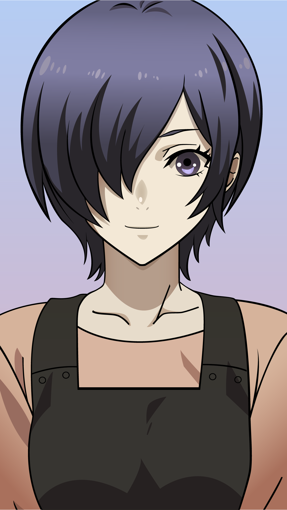
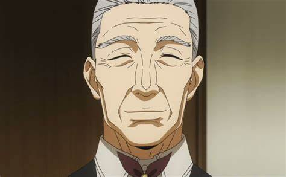
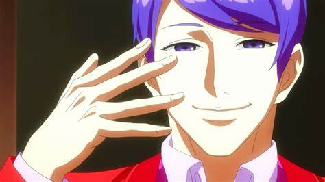
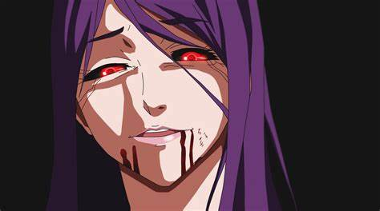

Personagens principais

Touka

Yoshimura

Kaneki

Gourmet

A história de Tokyo Ghoul gira em torno de Ken Kaneki, um estudante que mal sobrevive a um encontro mortal com Rize Kamishiro, uma mulher que se revela um ghoul; ghoul são criaturas semelhantes a humanos que caçam e devoram carne humana, com essa revelação Rize ataca Kaneki que é ferido gravemente, tentando fugir desesperadamente Rize o encurrala até que vários canos de metal caem em Rize aparentemente a matando, logo após isso Kaneki desmaia devido aos ferimentos e é levado para o hospital em estado critico. Depois de recuperado, ele descobre que, de alguma forma, foi submetido a uma cirurgia que o transformou em meio-ghoul, e que, assim como eles, deverá consumir carne humana para poder sobreviver.